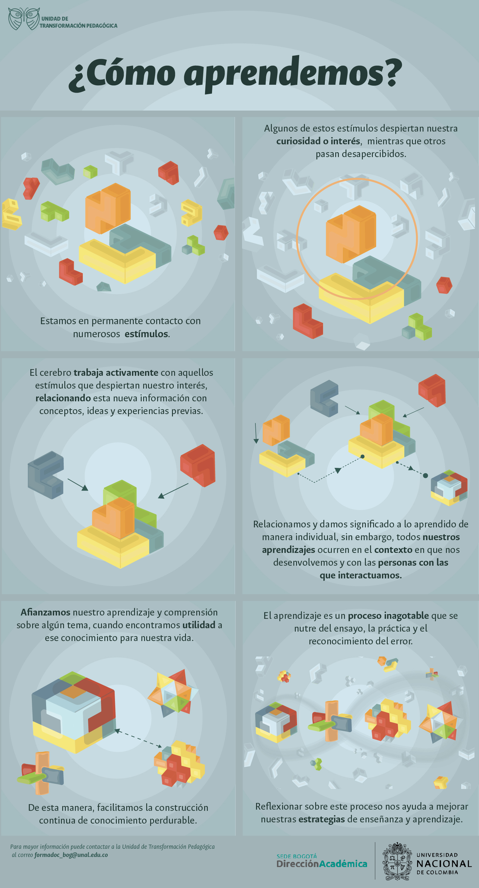

Cursos en la UN para el periodo 2020-02
Aspectos pedagógicos
¿Como aprendemos?
Si tuviésemos que sugerir un texto guía para un curso sobre aprendizaje, probablemente sería este:
Héctor Ruiz Marín, ¿Cómo aprendemos? Una aproximación científica al aprendizaje y la enseñanza. 2020. Editorial Graó. Barcelona
Se trata de un libro de divulgación científica que recopila los aspectos más relevantes de nuestro conocimiento actual acerca del aprendizaje. Hemos intentado hacer un extracto del contenido de este texto, siguiendo la estructura de sus capítulos.
- Los procesos cognitivos del aprendizaje
- Los factores socioemocionales del aprendizaje
- La autoregulación del aprendizaje
- Los procesos clave de enseñanza
Justo en estos días, ha aparecido un podcast en el que entrevistan al autor sobre el contenido del libro.
Si quiere un camino aún más corto, explore la siguiente infografía, preparada por la Dirección Académica de la sede Bogotá, en la que se destacan los elementos más relevantes sobre el aprendizaje:

Obra publicada con Licencia Creative Commons Reconocimiento Compartir igual 4.0